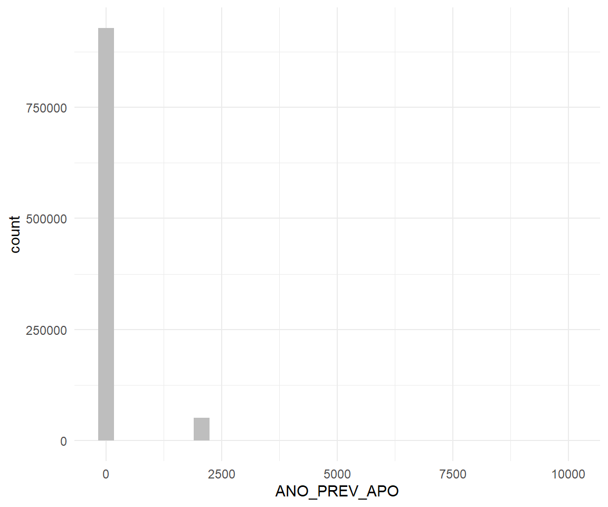
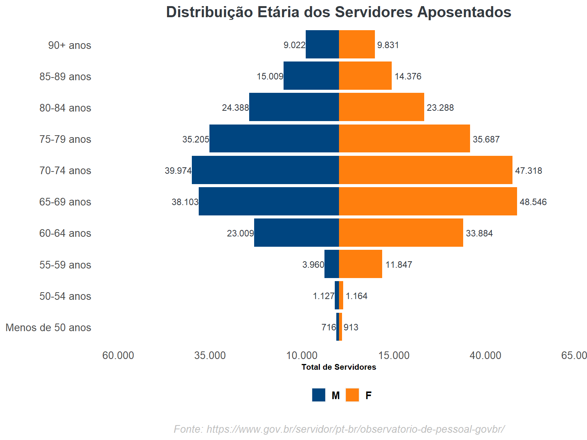
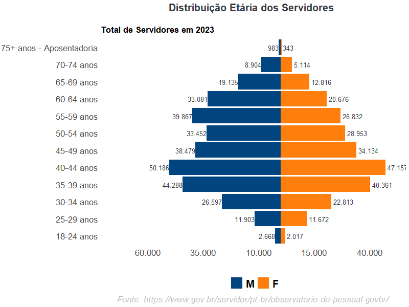
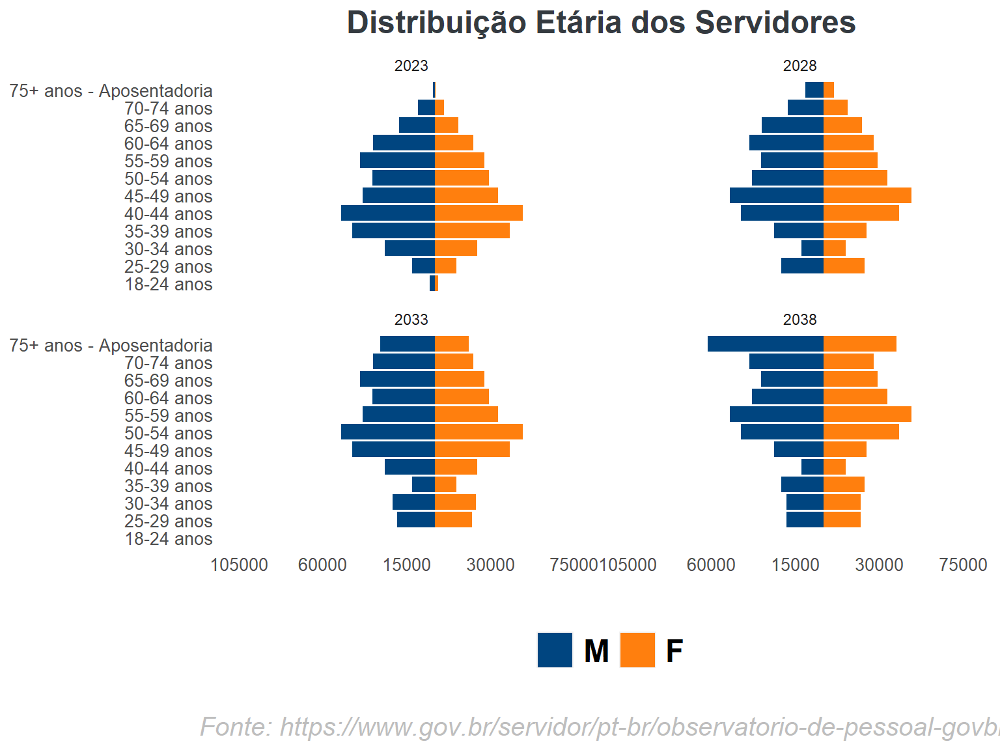

Infográfico de Projeção de Aposentadoria e Pirâmide Etária
Variável do Tabelão ANO_PRE_APO (Ano de Previsão de aposentadoria)
O histograma apresentado tem como objetivo esclarecer que a variável ANO_PRE_APO do conjunto de dados em questão não foi considerada em nossa análise. Isso se deve ao fato de que aproximadamente 75% das observações apresentam valores nulos para essa variável.
Pirâmide Etária dos Aposentados
Foi desenvolvido um gráfico de pirâmide para os aposentados, considerando as faixas etárias dos servidores com base em suas idades:

Servidores Ativos
Foram definidas faixas etárias (a cada cinco anos) para os servidores ativos, com base em suas idades atuais.
No ano de 2028, ocorre a transição de faixa etária para os servidores, evidenciando o acúmulo gradual dos totais em faixas etárias superiores.
O mesmo padrão se repete nos anos de 2033 e 2038, sendo que neste último ano, ocorre a acumulação de servidores na faixa etária 75+ anos - Aposentadoria, devido ao alcance da idade compulsória para a aposentadoria.”

Simulando um total de ingressos de Servidores a cada período
Foi adotado um cenário hipotético de 8.000 novos ingressos de servidores a cada ano, na faixa etária de 25-29 anos.
Dessa forma, ao longo de um período de 5 anos, teremos um acréscimo total de 40.000 novos servidores, distribuídos igualmente por sexo, resultando em 20.000 ingressos para cada grupo.
Observa-se que o padrão de comportamento desse gráfico assemelha-se ao mencionado anteriormente, onde a cada intervalo de cinco anos, os servidores alteram suas faixas etárias.
Separados
Apenas para demostração cada gráfico separado.

Projeção
Neste gráfico, foi representada a evolução do número total de servidores por sexo na última faixa etária, 75+ anos - Aposentadoria. Nesse contexto, partimos da premissa de que os servidores se aposentam compulsoriamente.
É importante ressaltar que esses valores podem variar, pois há servidores que aposentam antes da idade compulsória, e o cálculo não considera o total de falecimentos.